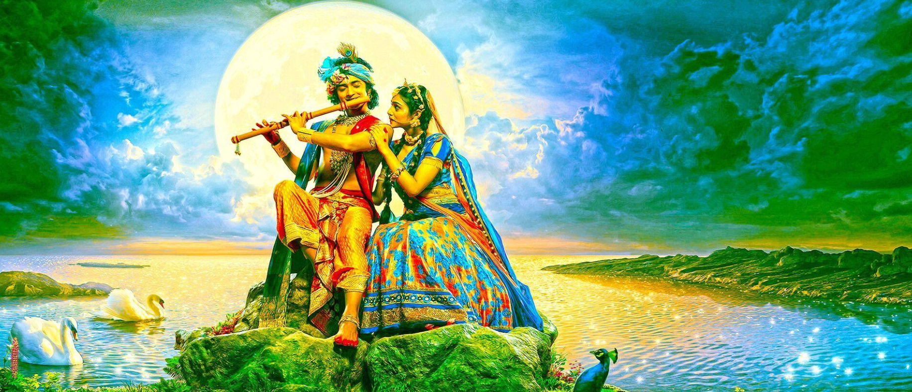

Krishna Janmashtami holds significant importance to Hindus around the world, and it is celebrated in diverse forms depending on their regional and cultural customs.[16][6] Hindus celebrate Janmashtami by fasting, singing, praying together, preparing and sharing special food, night vigils, and visiting Krishna or Vishnu temples. The places of Mathura and Vrindavan are visited by pilgrims.[8] Some mandirs organize recitation of Bhagavad Gita in the days leading up to Janmashtami.[17] Many northern Indian communities organize dance-drama events called Rasa Lila or Krishna Lila.[14]  The tradition of Rasa Lila is particularly popular in the Mathura region, in northeastern states of India such as Manipur and Assam, and in parts of Rajasthan and Gujarat. It is acted out by numerous teams of amateur artists, cheered on by their local communities, and these drama-dance plays begin a few days before each Janmashtami.[18][19] People decorate their houses with flowers and light.[20] On this day, people chant "Hare Krishna hare Krishna, Krishna- Krishna Hare Hare". The Janmashtami celebration is followed by Dahi Handi, which is celebrated the next day.[21][22] After Krishna's midnight hour birth, forms of baby Krishna are bathed and clothed, then placed in a cradle. The devotees then break their fast by sharing food and sweets. Women draw tiny footprints outside their house doors and kitchen, walking towards their house, a symbolism for Krishna's journey into their homes.[14]